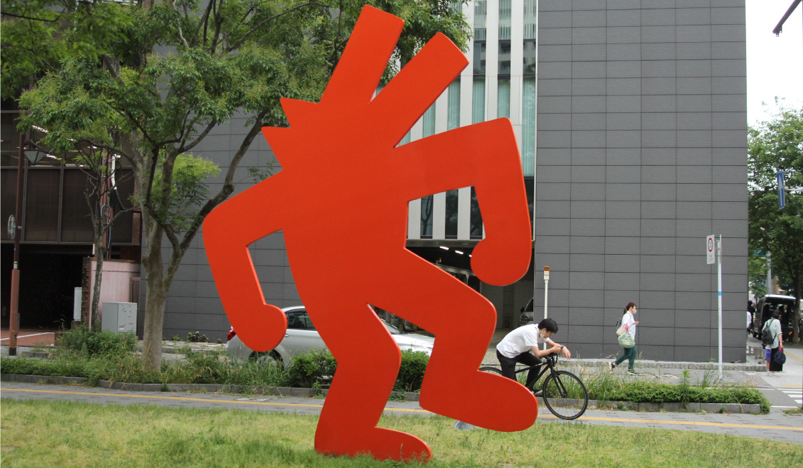
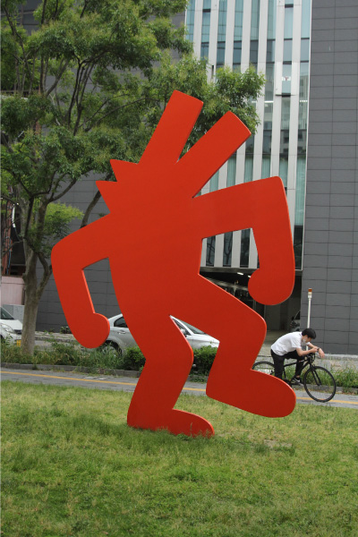
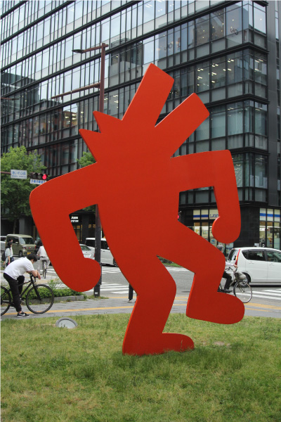
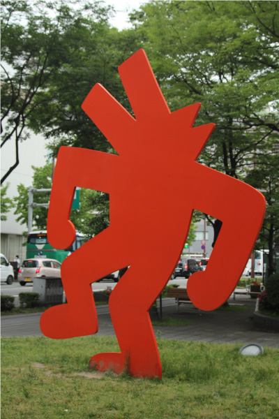
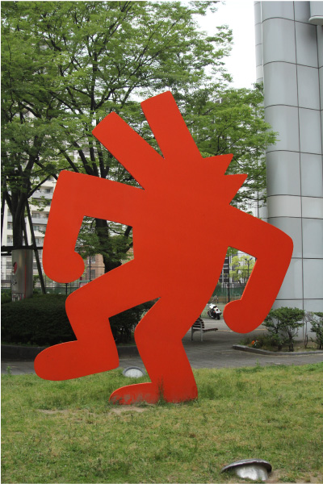

キース・ヘリング
   
中央区舞鶴のあいれふ入り口に堂々と存在するこの作品。フレッシュな赤色をしたアイコニックな犬の形の彫
刻。これは世界的な人気のアメリカ人アーティスト、キース・ヘリングの作品だ。ヘリングはストリート
のアートシーンをルーツに持ち、生涯、愛と平和をテーマに表現を続 け、メッセージを発信していった。
福岡市の新しいランドマークにするべく、アメリカの個人所蔵家から福岡市が買い受け、今の場所に立った。